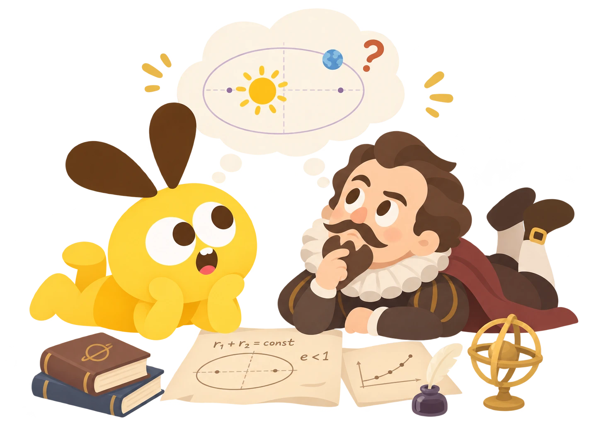
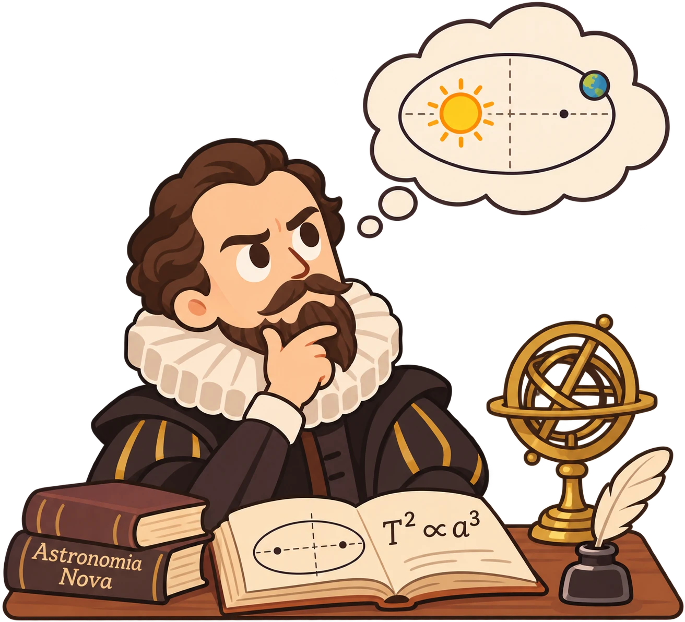
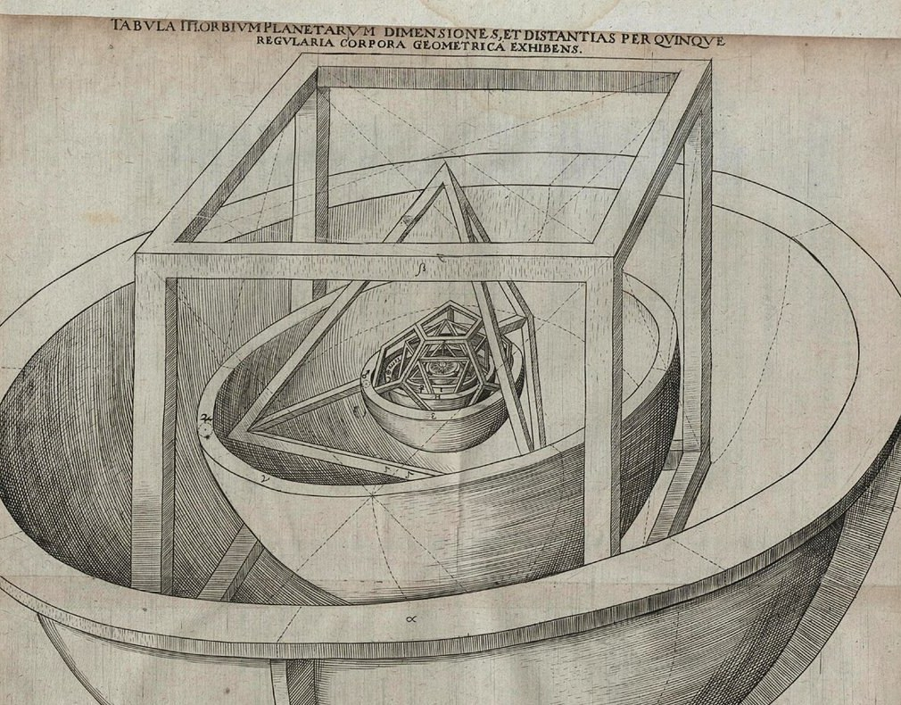
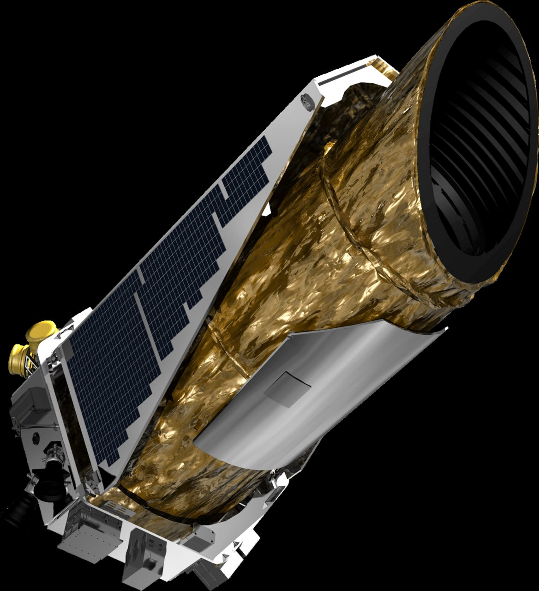
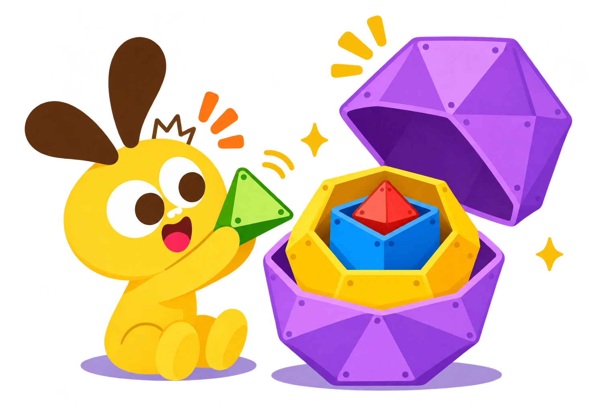

开普勒的宇宙世界

开普勒的宇宙世界
还记得这 5 位伙伴吗？
正四面体
立方体
正八面体
正二十面体
正十二面体
看面每个面都一模一样
看顶点每个角围着的面一样多
柏拉图把 5 位伙伴，分给了谁？
开普勒的猜想
1
400 年前，有人想用它们解开一个谜

天文学家 · 开普勒
天上为什么
正好有 6 颗行星？
6 颗行星，中间有几个空隙？
6 颗行星，5 个空隙，正好 5 种形状！
他把 5 种形状，一层套一层

《宇宙的奥秘》1596 年
- 5正八面体水星 ↔ 金星
- 4正二十面体金星 ↔ 地球
- 3正十二面体地球 ↔ 火星
- 2正四面体火星 ↔ 木星
- 1立方体木星 ↔ 土星
一算：差不多对上了，可还差一点
按形状算出来的天文学家测出来的
- 正八面体水星 ↔ 金星差了约 15%
- 正二十面体金星 ↔ 地球差了约 11%
- 正十二面体地球 ↔ 火星差了约 21%
- 正四面体火星 ↔ 木星差了约 15%
- 立方体木星 ↔ 土星几乎一样
拿真数据一比：轨道是椭圆
开普勒原来以为
第谷的数据告诉他
开普勒选择相信数据
1596大胆猜5 种形状套出宇宙
→1600拿数据第谷 30 多年的记录
→1609改过来轨道是椭圆
→2009今天开普勒太空望远镜

大胆猜，用数据检验，错了就改。
亲手搭一个套娃
2
猜一猜：5 位伙伴套起来，谁在最里面？
我们要搭的套娃：从里往外 5 层
1二十面体2八面体3四面体4立方体5十二面体
第 1 步：搭一颗红色刺猬球
第 2 步：连成二十面体
第 3 步：包一层八面体
第 4 步：长出四面体
发现：四面体藏在立方体里
发现：立方体藏在十二面体里
课后挑战
1
拼一拼：套上立方体和十二面体，说出 5 层的名字。
2
数一数：哪两层共用了白球？各共用几个？